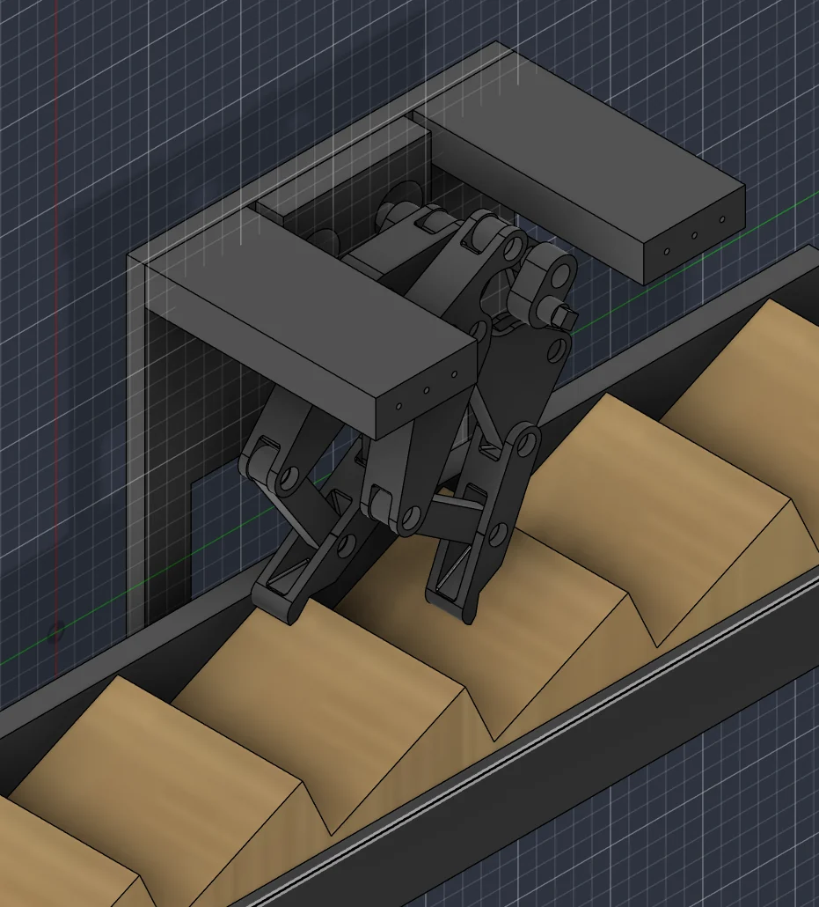
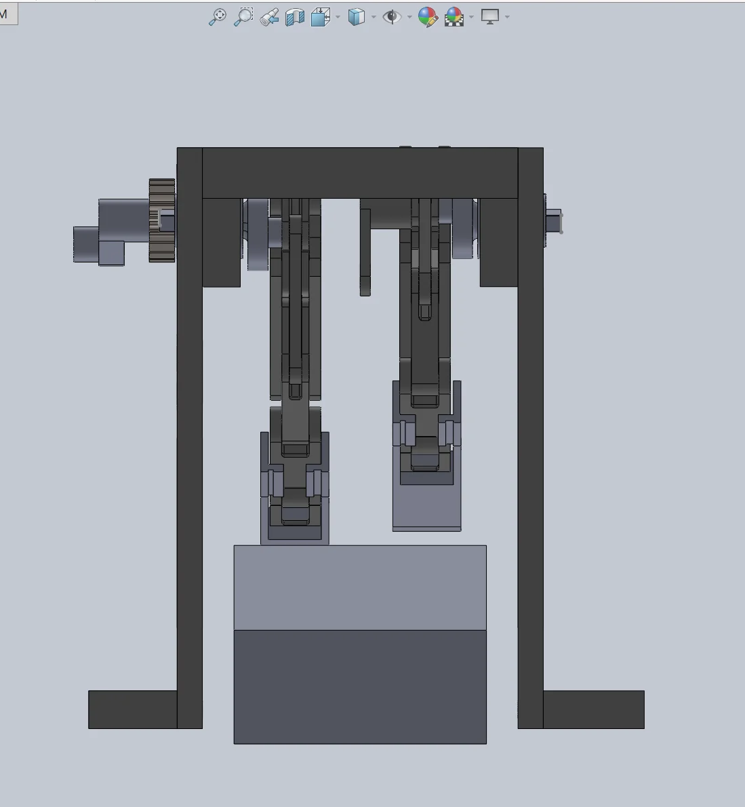
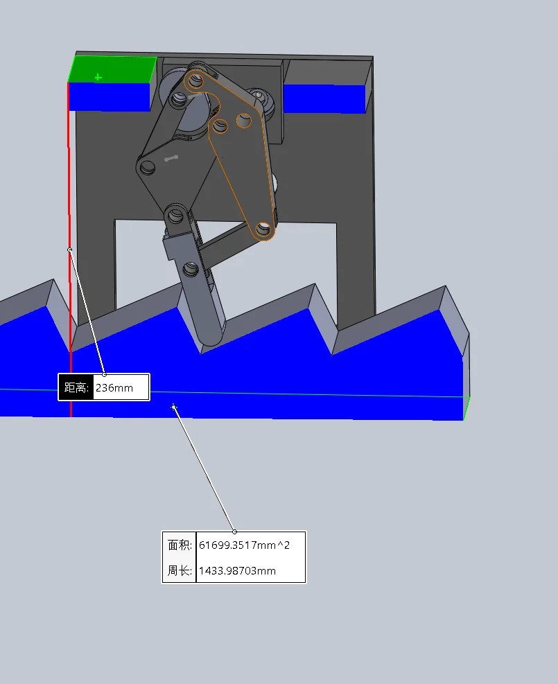
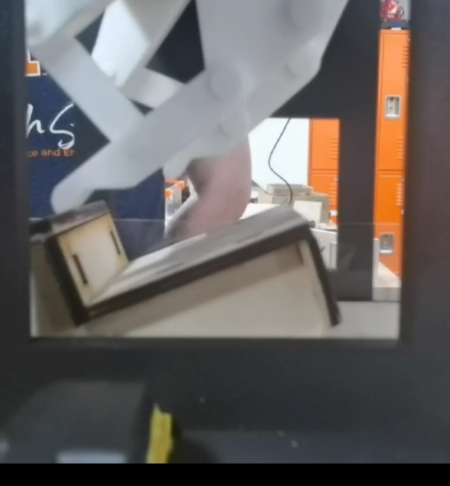
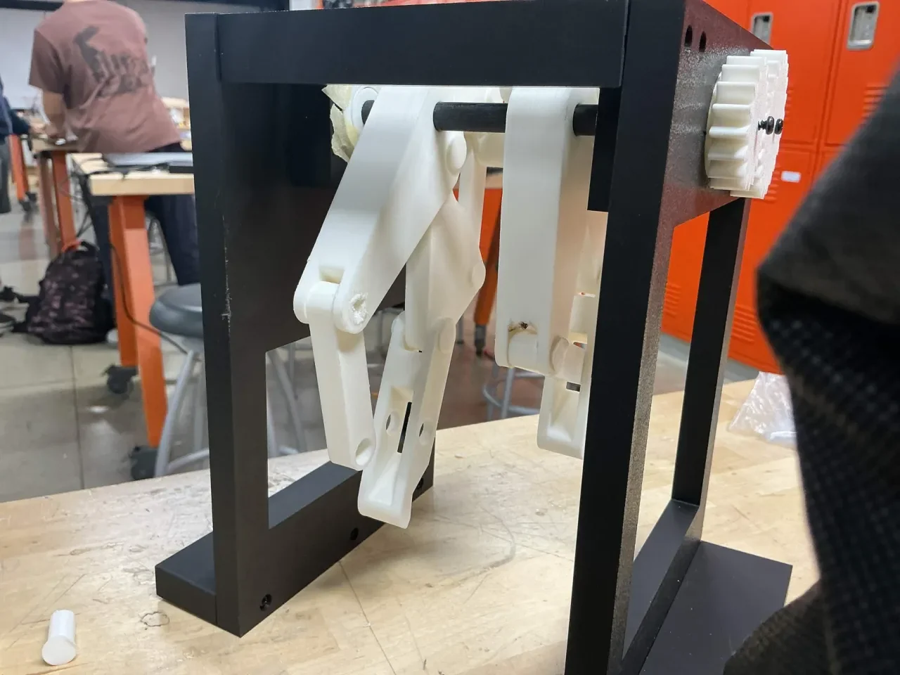
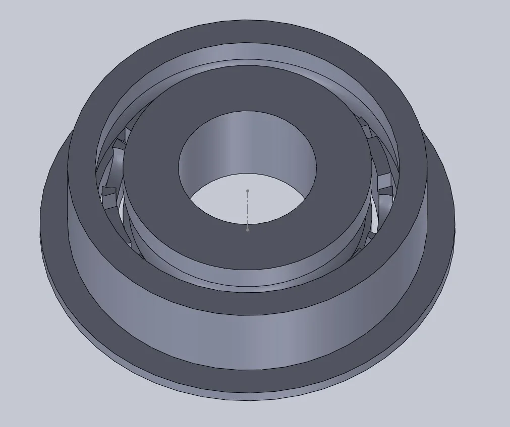
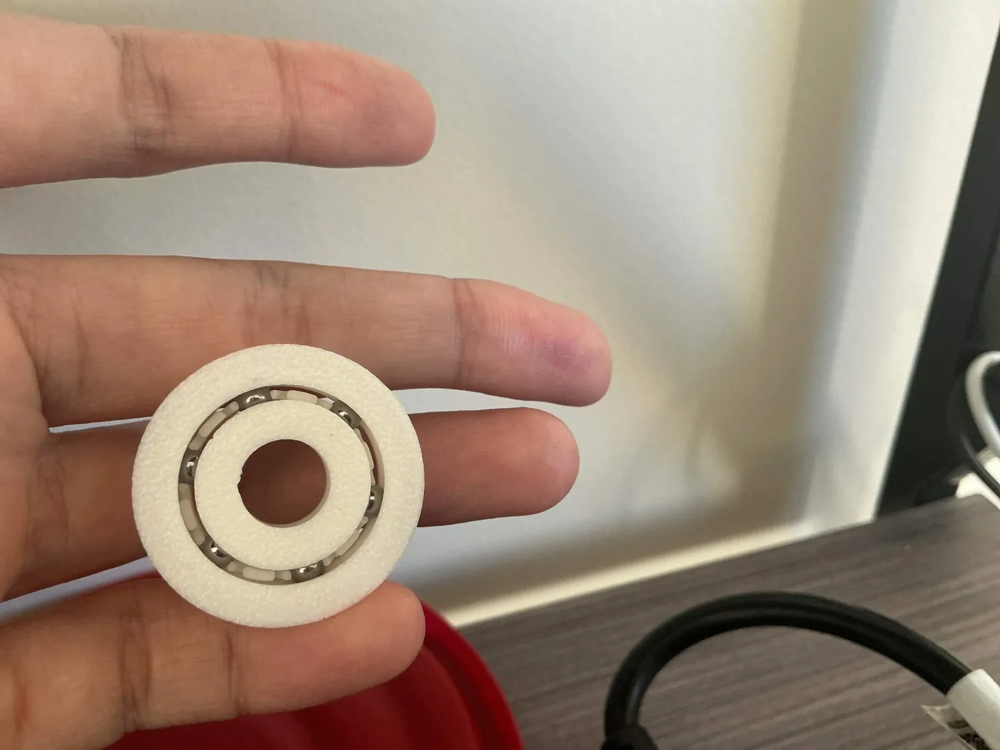
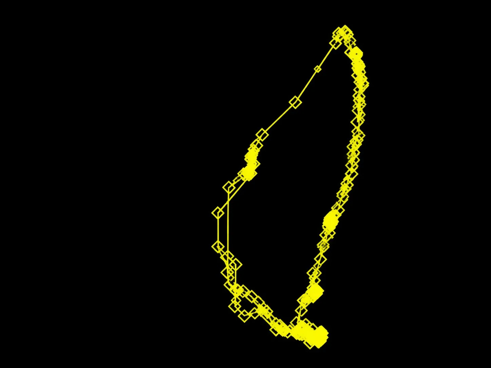

Mechanism design · ME 370, UIUC
TerraTrek: crank-driven eight-bar walking mechanism
Turn one continuous hand-crank rotation into a stepping gait that climbs and pushes back a spring-loaded stair rack.

Challenge
Turn one crank rotation into a stepping gait that pushes a 2 N spring-loaded stair rack without sliding back.
Approach
Two eight-bar legs, 180° out of phase and gear-coupled to one crank, with a hooked, compliant foot.
Outcome
Cleared and pushed the stairs with a 23 × 23 × 20 cm all-PLA build that cost $36.81.
- My role
- Team design project
- Timeline
- Fall 2026
- Course
- ME 370 Mechanical Design I
- Tools
- MotionGen, CAD, gear design, 3D printing, gait tracking
- Minimum push force against the spring-loaded stairs
- 2 N+
- Step height the gait path clears
- 3.7 cm
- Total build cost
- $36.81
Problem
Turn one continuous hand-crank rotation into a repeated stepping motion that pushes back a spring-loaded stair rack.
- Clear stairs 3.7 ± 0.3 cm tall and 8 cm long, then push with a flat, horizontal stroke instead of slipping
- Deliver at least 2 N of horizontal force without letting the rack slide back
- Fit inside a 24 × 24 × 24 cm box
The final design, walking
The final CAD assembly driven from the crank: both legs step over the stairs, land, and push the rack back.
- Model
- Final CAD assembly
- Shows
- Both legs stepping and pushing the rack
- Length
- 0:08, silent
Linkage selection
We picked an eight-bar linkage with a Pugh matrix over Watt I and double-slider alternatives, because its foot path can be reshaped by changing link lengths.
The first linkage’s gait was too short to clear the step. A 10-bar version with a pantograph gave a much taller path but risked sharp acceleration cusps. An eight-bar with an extended foot cleared the step without adding cusps, so we chose that.

Moderate-fidelity 8-bar

10-bar with pantograph

8-bar with foot · chosen
Two legs, one crank
Two legs run 180° out of phase, so their duty cycles overlap and at least one foot is always on the stairs: no backsliding. Two small gears on one drive shaft each drive a leg through a larger gear, which multiplies torque, and a coupler link between the legs holds the phase. The foot is hooked because the leg rotates after it contacts the stair.


Final design over the stair rack
The final prototype: two eight-bar legs in a 3D-printed chassis



Front view: leg spacing and side openings for full link rotation


Bounding-box check against the 24 cm limit
Prototype testing
The CAD pushed the stairs, but the first print didn’t: joint friction was high at points along the path, and the foot barely cleared the stair or hit its top.
- A missing clearance at the bottom joint of the largest link caused a collision that flattened the gait; we cut away the colliding material
- No off-the-shelf bearing fit our shafts, so we designed custom flange ball bearings: printed races and retainer with 4 mm steel balls
- A compliant foot joint lets the foot recover from hitting the top of a stair and flex over it


First prototype: the foot catching on the stair


The prototype on the bench during testing


Custom flange ball bearing


The printed bearing with its 4 mm steel balls
Gait on the prototype
One continuous crank rotation drives the eight-bar leg through its full stepping cycle.
- Drive
- Hand crank, gear-coupled
- Shows
- One leg’s full gait cycle
- Length
- 0:12, silent


Video-tracked gait path of the prototype
Results
- Cleared and pushed the stair rack, meeting the design requirement, with at least 2 N of push force and no backsliding
- All-PLA build with Plastite-screw assembly
- Final CAD at ≈23 × 23 × 20 cm inside the 24 cm box
- $36.81 total build cost
Lessons
- Design in extra gait height: tolerance errors and play in 3D-printed joints compound into a real loss of height compared to simulation
- Rubber bands gave an inconsistent restoring force at the foot joint; a spring would be more predictable
- The next version needs a leg without the extra degree of freedom that can still carry load without compromising the gait path